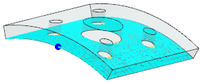

Drape the layup over the pad
-
 Simulation Navigator
Simulation Navigator -

 2d_mesh(2) (deselect)
2d_mesh(2) (deselect)
-
Pad_layup
-
 Update
UpdateNote
The draping process takes 1 to 2 minutes.
-
 the Information window
the Information window
